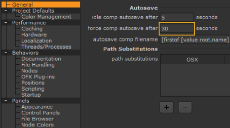

We assume you already know how to save files (Hint: choose File > Save Comp As). In addition, Nuke includes an autosave feature, which helps recover project files after a system failure. Yes, we know that never happens to you, but in the unlikely event that it does, you won’t lose your work when you have autosave enabled.
| 1. | Click the right mouse button over the Node Graph pane, and choose Edit > Preferences. |
Notice the autosave filename directory is set to:
[firstof [value root.name] [getenv NUKE_TEMP_DIR]/].autosave
You don’t need to make a change; this simply tells Nuke to store automatic backup files in the same directories as your project files or the path supplied by the NUKE_TEMP_DIR environment variable (for more information on environment variables, see Configuring Nuke).
Now, how often would you like Nuke to generate an automatic backup while you’re working? Every five minutes?
| 2. | Change the force comp autosave after option to 300 seconds, to generate an automatic backup every five minutes. |

| 3. | Click Save Prefs to keep the changes and then Close to return to the main window. |
If you close this dialog box without clicking the Save button, then the changes affect only the current session of Nuke.
You may ask, “How do I recover a back-up file in the event of a system or power failure?” Good question! When you relaunch Nuke, you’ll see a message that asks if you want to recover the .autosave file for the project that was last open. Click Yes and Nuke opens the back-up file.
TIP: The .autosave files can still be useful, even when you properly exit Nuke, because they are not deleted from the directory. You can, for example, rename an .autosave file to create an archive of the previous version of your project file.
Sometimes you may see the recovery message even though you have not experienced a system failure. This happens when you exit Nuke without saving the changes to a project file, and Nuke recognizes that the time stamp on the .autosave file is later than the Nuke project file you’re trying to open. In this case, you decide which version of the project file you want to open.
Okay. You’re reading this, so we assume you’re a freewheeling rebel who possibly enjoys the risk of losing your work. It’s an adrenaline thing. Or perhaps you prefer to do everything yourself, manually, and you have a secret obsession for saving your files. Whatever the reason, you can disable the autosave features by setting the intervals for both “autosave idle” and “force autosave” to zero seconds. That’s all you need to do. Good luck.
|
|